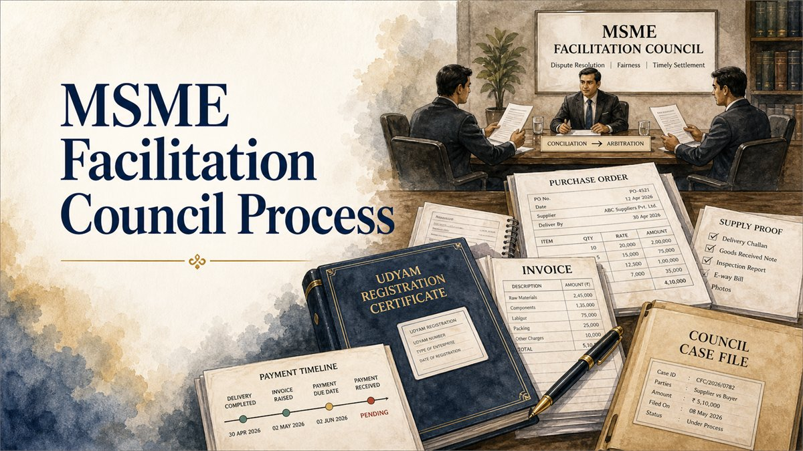

A defective-goods dispute does not automatically cancel an MSME delayed-payment claim. The buyer must distinguish a factual defence against the invoice, a reduction of price for breach of warranty, and a properly pleaded set-off or counterclaim, supported by contemporaneous evidence.

Answer in brief
Yes, a buyer may raise a defence concerning defective goods and, during arbitration under Section 18(3) of the MSMED Act, plead a qualifying set-off or counterclaim. The Supreme Court in Silpi Industries v. Kerala State Road Transport Corporation (29 June 2021) recognised counterclaims and set-off in MSEFC arbitration by reading Section 18(3) with Section 23(2A) of the Arbitration and Conciliation Act, 1996.
That does not mean every allegation of defective supply succeeds. Contract terms, inspection records, the statutory acceptance chronology, the alleged defect, quantifiable loss, limitation and the stage of proceedings remain decisive.
Three issues that must not be confused
- Defence to the invoice: Was the quantity delivered, goods supplied as contracted, or price actually due? The supplier must establish the relevant supply and payment entitlement.
- Diminution or extinction of price: Section 59 of the Sale of Goods Act, 1930 allows a buyer, where the provision applies, to set up breach of warranty in reduction or extinction of the price. It does not automatically permit rejection of accepted goods.
- Set-off or counterclaim: A respondent may plead a distinct money demand for loss or damage, within the applicable jurisdictional and procedural limits, rather than merely denying the seller's calculation.
These positions can overlap factually, but each has a different legal and evidentiary foundation. Label a response accurately; describing every alleged loss as a 'set-off' may obscure whether the buyer is disputing the debt itself or seeking an affirmative award.
Acceptance and objections under the MSMED Act
Section 15 uses the day of acceptance or deemed acceptance to determine the statutory payment period. Section 2 describes the relevant acceptance framework and the effect of an objection raised in writing within 15 days of delivery of goods or rendering of services. A timely objection and the date on which it is removed can therefore affect calculation of the payment timeline.
Preserve the actual delivery date, inspection report, contemporaneous notice identifying the defect, evidence of dispatch or receipt of the notice, and subsequent communications resolving or disputing it. A complaint raised only after the statutory window may still matter for an underlying contractual or warranty dispute, but it should not casually be presented as a timely written objection under the MSMED definition.
Acceptance under the MSMED Act and the buyer's rights under the Sale of Goods Act are not interchangeable tests. Nor is the invoice date always the statutory acceptance date. For an invoice-wise explanation, see Section 15 payment timelines.
Rejected goods, accepted goods and breach of warranty
Sections 41 to 43 of the Sale of Goods Act deal with examination, acceptance and rejected goods. Whether a buyer can reject supplies turns on the terms and character of the breach, reasonable opportunity to examine, the buyer's conduct and the particular transaction.
Section 59 addresses breach of warranty, including cases in which breach of a condition is treated as breach of warranty: the buyer may set up the breach in diminution or extinction of the price, or sue for damages. It is therefore unsafe to assume that use or acceptance of goods necessarily ends every monetary defence, or that an allegation of defects permits non-payment of the entire invoice without proof.
If the buyer says that goods are rejected or held pending collection, preserve separate records showing the exact stock, condition, location, communication of rejection, any proposed return or replacement, and whether the buyer later used, resold or otherwise dealt with the goods. Rejection, return, replacement and adjustment should not be treated as synonyms.
Can an MSEFC decide a buyer's counterclaim?
Under the presently commenced framework, Section 18(2) provides for conciliation. Following unsuccessful conciliation, arbitration proceeds under Section 18(3). The Arbitration and Conciliation Act applies to that arbitration as though there were an agreement contemplated by Section 7(1).
In Silpi Industries, the Supreme Court held that a counterclaim is maintainable in the arbitration arising from the MSMED Act. Section 23(2A) of the Arbitration and Conciliation Act recognises a counterclaim or set-off within the scope of the arbitration agreement. The Court identified the risk of fragmented, parallel proceedings and conflicting findings if the buyer's connected claims were excluded.
Important limit: the decision establishes maintainability in principle; it does not adjudicate whether an individual claim is within scope, within limitation, properly quantified or proved. The buyer should state the legal basis and relief for each head of claim. The MSEFC buyer-reply checklist addresses the wider response strategy.
Illustration: disputed invoices and returned stock
Illustrative facts only: A supplier raises three invoices for industrial goods. The buyer has paid the first invoice, but reports quality problems in the later deliveries, retains identifiable disputed stock, and sends written messages asking for replacement. The supplier nevertheless claims the full outstanding balance.
The buyer should prepare an invoice-wise reconciliation showing amounts already paid, deliveries acknowledged, quantities allegedly defective, disputed goods still in custody, any accepted replacement arrangement, and the proposed adjustment. If damages are separately claimed, identify the contractual basis, evidence of breach, causation and actual loss.
Messages promising replacement may be important evidence, but they do not by themselves conclusively establish that the supplier admitted a particular amount of liability or agreed to extinguish every unpaid invoice. The parties' complete communications and subsequent conduct must be assessed.
What evidence should the buyer preserve?
- Purchase orders, specifications, samples, quality standards and contractual inspection or rejection clauses.
- Invoices, delivery challans, goods-received notes, consignment records and payment or part-payment proof.
- Timely written defect notices, emails, WhatsApp conversations and verifiable delivery or transmission records.
- Stock registers and itemised inventories identifying defective or returned quantities, locations, batch numbers and condition.
- Photographs, inspection reports, test reports, customer-return records and independent technical material where available.
- Correspondence concerning replacement, collection, credit notes, settlement and adjustments.
- Debit/credit notes and a calculation separating admitted dues, disputed value, claimed loss and interest.
Preserve electronic records in their native context with dates, participants and attachments. If production or authenticity is disputed, electronic-evidence compliance may need separate attention.
How to structure the reply and counterclaim
- State whether supplier status, Council jurisdiction, limitation and the claimed transaction are admitted or disputed, with specific reasons.
- Give a chronology for each invoice: order, delivery, inspection, objection, communication, payment and return/replacement discussions.
- Identify each pleaded defence: no delivery, short delivery, breach of condition, warranty breach, payment, adjustment or settlement, as supported.
- Separate any demand for damages, refund or set-off from the response denying the claimant's entitlement; state figures and supporting calculations.
- Produce relevant exhibits with an index rather than referring generally to 'defective material'.
- Seek only relief the Council or tribunal can properly grant at the current procedural stage; observe applicable directions on pleadings and fees.
Does alleging defective goods automatically stop Section 16 interest?
No. Statutory interest under Section 16 should be assessed after the relevant supply, acceptance, contractual payment term, amounts due and any legally sustainable reduction or adjustment have been determined. An untested allegation should not be treated as an automatic interest holiday. Equally, a properly established defence or reduction in the price may require reassessing the principal to which interest is applied. See Section 16 interest and interest calculation records.
Procedural status of the 2026 MSMED amendment
The Micro, Small and Medium Enterprises Development (Amendment) Act, 2026 uses staggered commencement. Notification S.O. 5575(E), dated 12 October 2026, commenced specified amending sections on 15 October 2026 and schedules section 12 for 15 December 2026; it did not bring amending sections 8 to 10 into force. The new dispute-resolution provisions should not be substituted for the presently operative Section 18 procedure without checking subsequent Gazette notifications. Consult the updated Samadhaan guide for the procedural distinction.
Frequently asked questions
Can I withhold all payment just because the goods were defective?
There is no automatic rule permitting this. Analyse the contractual obligation, evidence of delivery and defects, right to reject or reduce the price, payments and the disputed quantity. A supported Section 59 defence may be available, but its extent depends on the facts.
Can the buyer file a counterclaim before the Facilitation Council?
Counterclaims and set-off are maintainable in principle during arbitration under Section 18(3), as recognised in Silpi Industries. Maintainability does not establish the merits or quantum of the specific claim.
Does a promise to replace defective goods cancel the invoice?
Not automatically. Consider the exact promise, acceptance by the parties, correspondence, replacements actually made, credit notes, and any agreement to adjust or waive the claimed amount.
Is a defect notice sent after 15 days useless?
Not necessarily. It may still be evidence in a contractual or warranty claim, but it may not operate as a timely written objection for the MSMED Act's statutory acceptance chronology.
Related guides
References / Sources
- MSMED Act, 2006, Sections 2, 15 to 18, 23 and 24 (read with the commencement status of 2026 amendments).
- Sale of Goods Act, 1930, especially Sections 12 to 13, 41 to 43 and 59.
- Arbitration and Conciliation Act, 1996, especially Sections 7 and 23(2A) (counterclaims and set-off). The Section 18 MSEFC reference is in the MSMED Act.
- Silpi Industries v. Kerala State Road Transport Corporation, Supreme Court, 29 June 2021, Civil Appeal Nos. 1570-1578 of 2021.
- Gazette of India, Notification S.O. 5575(E), 12 October 2026 (CG-DL-E-12102026-277080).
Disclaimer
Last reviewed: 20 October 2026